家族历史
探本溯源 · 继往开来
下枫槎谢氏宗源记 ▶
点击展开阅读全文
石马枫槎世系图 ▶
点击展开查看
谢氏起源
谢氏出自姬姓，以邑为氏。据《元和姓纂》及《通志·氏族略》记载，周宣王（公元前827-前781年在位）封其母舅申伯于谢邑（今河南南阳市一带），建立谢国。其后人以国为氏，称谢氏。
谢氏得姓至今已有两千八百余年历史。在漫长的发展过程中，谢氏逐渐由河南向全国迁徙繁衍，形成了"陈留谢氏"、"会稽谢氏"等著名郡望。东晋时期，以谢安、谢玄为代表的谢氏家族达到鼎盛，与王氏并称"王谢"，为天下望族。
谢氏堂号众多，最有名者当属"宝树堂"和"乌衣堂"。"宝树"出自唐太宗李世民对谢氏家族的赞誉——"宝树映庭"；"乌衣"则源自东晋建康（今南京）的乌衣巷，为谢氏聚居之地。唐代刘禹锡有诗云："旧时王谢堂前燕，飞入寻常百姓家。"下枫槎谢氏亦以"乌衣世泽、宝树家声"为家族楹联，传承千年家风。
说说宁海谢氏
自申伯受封至今 · 两千八百载 · 世系源流一览
宁海谢氏均属姜姓谢氏，为申伯后裔，与会稽（绍兴）、临海谢氏同宗，属浙东谢氏大支。唐末至两宋，中原战乱频仍，台州周边（天台、临海）的谢氏族人陆续为避乱或仕宦迁入宁海，形成了有史可考的三支独立始迁支系。其中下枫槎一脉的先祖正是由会稽南下经临海下渡，再辗转至石马（下谢），最终定居宁海。
梅林杏树谢氏
北宋崇宁年间（1102–1106）
自天台榧树迁入
宁海最早谢氏支系
长街谢氏
南宋末年（1279年前）
始迁祖谢寿甫自石马迁入
全县主流，人口最盛
下枫槎谢氏
北宋宣和 · 文杲公自石马迁岩下
溯自临海下渡 → 石马（下谢）
以望府茶为业
梅林杏树谢氏为宁海有史可考最早迁入的谢氏支系，北宋崇宁年间自天台榧树村迁居梅林杏树村（旧名"饭店坑"，后因谢氏聚居更名）。该支世代定居杏树村，后裔以村域为核心，少量散居周边。
长街谢氏为宁海谢氏人口最多、分布最广的主流支系。南宋末年，始迁祖谢寿甫自宁海石马（今属三门珠岙镇）迁居长街，堂号"东山堂"，承浙东谢氏总堂号，溯源东晋谢安"东山再起"之典。明清时期，长街谢氏分房外迁，形成了力洋谢家村等规模化聚居点，后裔还散居易洋、越溪、一市等地。宁海境内除梅林、下枫槎外的谢姓，大多归属长街支系。
下枫槎谢氏即吾族所在。溯吾族迁徙源流：自东山会稽南下经临海下渡，至石马（下谢）小四公，乃入浙东之近祖。北宋宣和年间（约1125年），文杲公自石马（下谢）迁居宁海岩下（岩头下），任越溪司巡检，为枫槎谢氏始迁祖，至今近九百载，传三十六世。与长街谢氏同出石马（下谢），均为浙东谢氏一脉。明隆庆六年（1572），岩下遭特大洪水，村舍损毁，族人举族迁至枫槎岭下首，因地势低于上枫槎，故名"下枫槎"，永久定居。堂号"东山堂"，承东晋谢安"东山再起"之典。族人世代以种茶为业，望府楼山乌砂壤土、云雾缭绕，所产望府茶为宁海名茶，村域茶园连片，至今为支柱产业。
除三大支系外，宁海城关、西店、深甽、桥头胡等地的零星谢姓，均为三大支后裔近现代外迁散居，无独立始迁记载。而力洋谢氏虽聚居规模较大，但实为长街谢氏明至清代分房外迁形成，无独立始迁祖与迁入年代，史料均归入长街支下，并非独立的第四支系。
据光绪《宁海县志》、1944年九修《重修谢氏宗谱》及地方史志记载，宁海谢氏脉络清晰，三支并立，各有所源，而同归浙东谢氏一脉。其中下枫槎谢氏尤为特别——它是宁海谢氏中唯一有明确迁址年代（1572年）、完整迁徙事由（洪水迁居），且以特色茶产业闻名的自然村支系。三支族人虽迁入有先后、聚居有远近，然溯源追本，皆申伯之裔，乌衣之脉，同气连枝。
北宋崇宁 · 天台迁入
南宋末 · 石马迁入
力洋谢氏为其分支
会稽→临海→石马
文杲公迁岩下
村落历史与沿革
从枫槎岭得名到今日新村
📜 村名由来
下枫槎村得名于村南枫槎岭。据《嘉定赤城志》记载，晋义熙元年（405），高僧昙猷自海上乘枫槎（枫树做的独木舟）至一市一带，弃槎登岸，游历浙东，先后创建寿宁、柯仙、多宝、广润诸寺，被推为佛教入浙开山大师。其所过山岭后人遂称为枫槎岭，西面岭下村落亦被称为枫槎村。因村落分两处，南边的称上枫槎，北边的称下枫槎。
🏡 建村历程
最早迁入下枫槎居住的为王氏族人，约在明洪武年间（1368-1398），距今650余年。
明后期，谢氏迁入。据枫槎《谢氏宗谱》所载，谢氏始祖原居住在三门石马（下谢），因任越溪巡检司巡检，于北宋圣和二年（1055）迁居双溪岩头下。明隆庆六年（1572），特大洪水成灾，谢氏第十六代裔孙谢彬、谢乾见下枫槎山清水秀、枫槎岭脚下似港湾环抱、有聚财之象，遂从岩头下迁居下枫槎开基筑庐。此后子孙兴旺、开枝散叶，遂成枫槎第一大姓。
清代及民国时期，又有陈、葛、史等姓氏居民先后迁入。如今的陈姓，与谢姓实有同宗之谊——文杲公之弟文榘公，为宁海东门桃源陈氏之祖，故谢陈两姓有"通谱"之说。
🗺️ 行政区划沿革
• 明代与清初 — 属连理乡宣扬里
• 清雍正六年（1728）— 属南乡石舌庄
• 民国21年（1932）— 属石兆乡
• 民国24年（1935）— 属石舌乡
• 民国28年（1939）— 属双港乡
• 民国36年（1947）— 属桂峰乡
• 1949年解放后 — 属一市区水车乡
• 1958年10月 — 属宁海公社水车管理区
• 1961年7月 — 属宁海区水车公社
• 1973年 — 属黄坛区水车公社
• 1983年 — 属水车乡
• 1992年至今 — 属跃龙街道水车办事处
• 2010年 — 下枫槎与上枫槎、草坦头、大路李3个自然村合并，组成望府村
族姓渊源
五姓人家，同聚一村
下枫槎现有谢、王、陈、葛、史共五姓人家，和谐共处，亲如一家。
👤 王氏
最早居民，明洪武年间（1368-1398）迁入，距今600余年。
👤 谢氏
明隆庆六年（1572）从岩头下迁入，至今450余年，为村中第一大族。
👤 陈、葛、史
分别于清代、民国及解放前后迁入。其中陈姓与谢姓同宗——文榘公为东门陈氏始祖，故有"谢陈通谱"之说。
📜 祖训家风
🌿 敦礼让 — 礼曰先之以礼让而民
🌿 睦乡邻 — 邻里和睦，守望相助
🌿 和兄弟 — 兄友弟恭，手足情深
🌿 耕读传家 — 亦耕亦读，诗书继世
🌿 清世明理 — 清白做人，明理处事
谢氏家训六则：孝悌 · 忠信 · 礼义 · 廉耻 · 勤俭 · 读书
谢氏世系源流
自炎帝至临海下渡 · 两千八百载世系传承
远古世系 炎帝 → 申伯
自炎帝神农氏传至申伯，凡六十五世。炎帝姜姓，号神农氏，为中华民族人文始祖之一。传至周代，裔孙佐（吕尚之子）生申伯。周宣王封元舅申伯于谢邑，以邑为氏，谢氏自此得姓。
申伯世系 申伯 → 缵 → 衡
申伯受封之后，子孙蕃衍，历周秦汉魏，代有闻人。传至晋代，有缵公为东山第一世，其侄衡公为会稽东山始祖，开东山谢氏之基业。
始宁东山世系 缵 → 闓 → 临海下渡
东山谢氏自衡公始，至东晋谢安、谢玄叔侄，以八万北府兵破苻坚百万之众于淝水，拯社稷于将倾，与琅琊王氏并称"王谢"，为天下望族之冠。传至闓公，为临海下渡第一世，浙东谢氏由此始。
临海下渡世系 闓 → 小四
自闓公（临海下渡第一世）传至小四公（石马始祖），历经九世。小四公为石马（下谢）始祖，乃文杲公（枫槎始迁祖）之直系渊源。
石马（下谢）分房派示意简图
小四公：炎帝第129世／申伯第66世／东山第32世／临海下渡第9世／石马（下谢）第1世。自小四公开派，衍生丹一、丹二、丹三三房，其后文杲公迁居宁海岩下为枫槎始迁祖，文榘公一派为东门桃源陈氏之祖。
迁徙历程
枫槎谢氏 · 千年迁徙源流
宗祠文化
下枫槎谢氏宗祠 · 精神的殿堂
下枫槎谢氏宗祠始建于清乾隆年间（约1740年），坐北朝南，三进两厢格局。前为门厅，中为议事厅，后为供奉厅。祠堂雕梁画栋，木雕、石雕精湛，具有典型的浙东清代建筑风格。门楣上有"谢氏宗祠"匾额，笔力遒劲。堂内悬挂"敦睦堂"匾额，寓敦宗睦族之意。每年举行春秋两祭——春祭在清明前后，为扫墓祭祖；秋祭在冬至前后，为宗祠合祭。祭祀仪式遵循古礼，三牲祭品，焚香燃烛，族人按辈分列队行礼。祭后设宴，合族共叙亲情。每逢重大节庆或家族大事，亦在宗祠举行仪式。宗祠不仅是祭祖的场所，更是族人议事、教化、凝聚人心的重要空间。
祖像
祖宗遗像 · 万世瞻仰
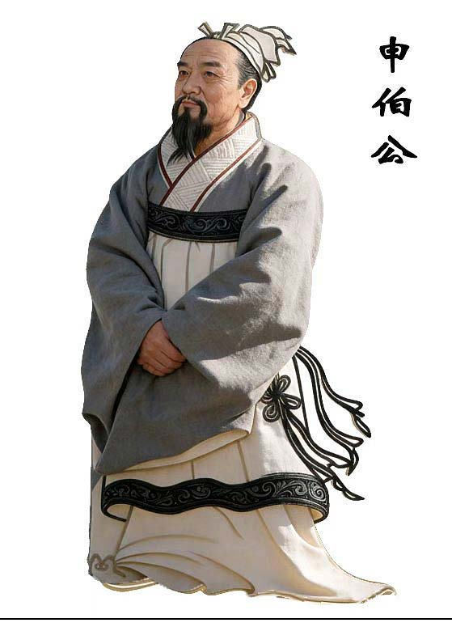
申伯
谢姓鼻祖，扶周中兴，周宣王赐封于谢邑，子孙以谢为姓（摘自三门下谢谱）
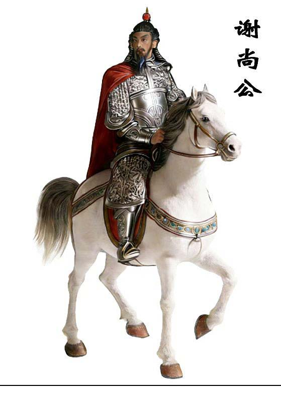
谢尚（308-357）
东晋名将，豫州刺史，领镇西将军（摘自下谢谱）
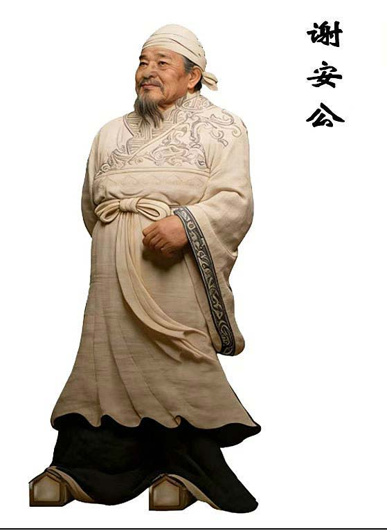
谢玄（343-388）
东晋名将，历官冠军将军、前都督，以军功诏加七州大都督（摘自三门下谢宗谱）
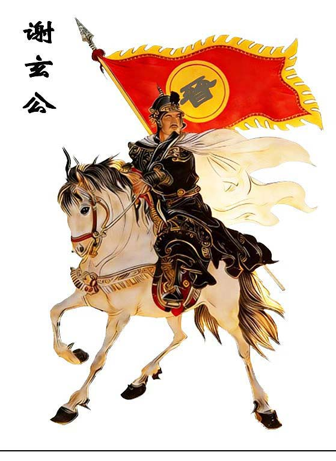
谢安（320-385）
东晋名相，赠太傅，谥文靖。淝水之战以八万兵战符坚八十万大军之胜，创中国历史上以少胜多战例史篇（摘自三门下谢宗谱）
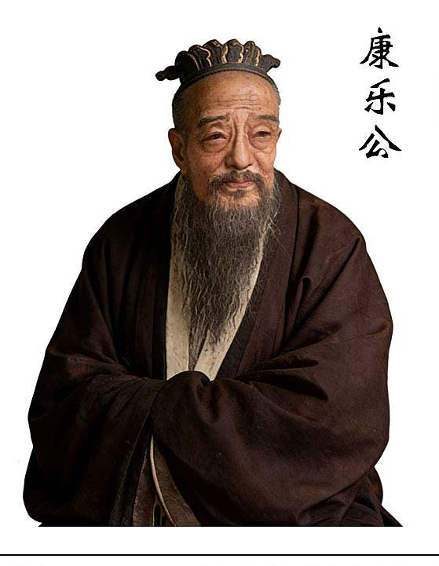
谢宏道
字宏道，宋中叶张镇孙榜进士，历官国子监司（摘自三门下谢宗谱）
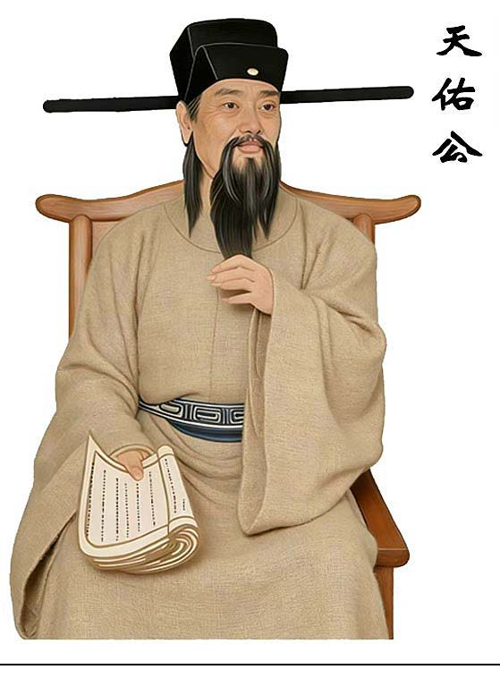
谢灵运（385-433）
南朝宋著名诗人，玄公之孙。十八岁封康乐公，世称谢康乐。入宋降公爵为侯爵。温州太守、秘书监、内史（摘自中国通史·榧树宗谱）
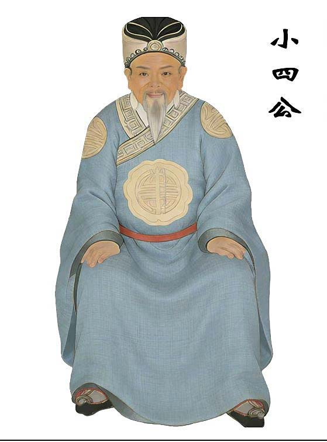
文杲公
三世祖杲公，字克，枫槎始迁祖。宋登仕郎，英敏卓荦，文武兼备，任司巡检。岩下开基置产居卜
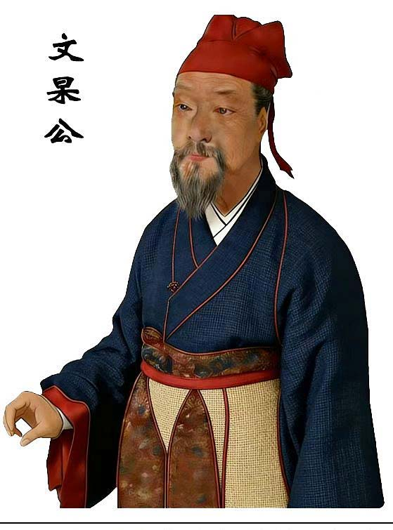
小四公
三门石马下谢始祖小四公（谢聪孙），朝奉郎谢奕信之孙、将仕郎兼文学家谢在纲之子
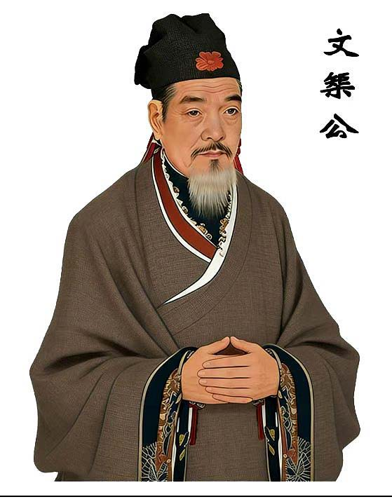
四世（杲公长子）
四世杲公长子，宋仕工部侍中，性和厚，在位小心醇谨，葬石马龙头山之原
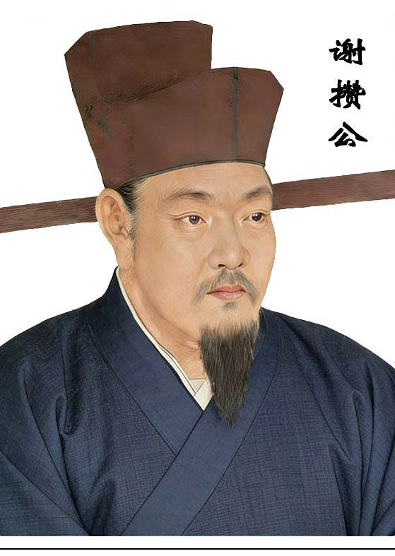
三世榘公
三世榘公，宋居士，下延邑城桃源祖，杲公胞弟。派下子孙邑城内东乡南乡西乡北乡各地。七世敬乙为复兴祖
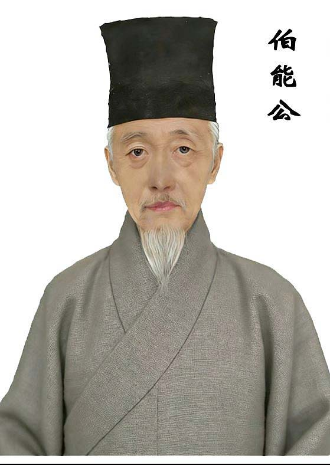
彬公
十八世叔仅公长子，出仕明祭酒，冠带荣身，素有孝行（岁隆庆始迁今枫槎，居为东房祖）
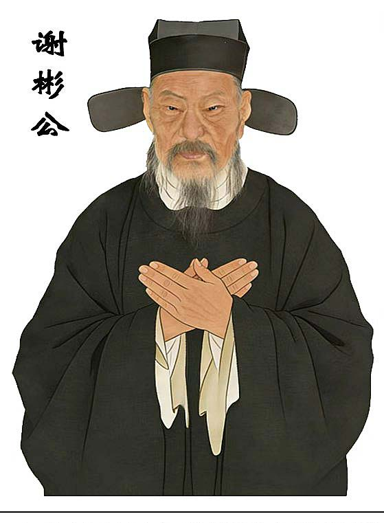
攒公
五世攒公子，宋乡榜举人，好古力学，博通经史
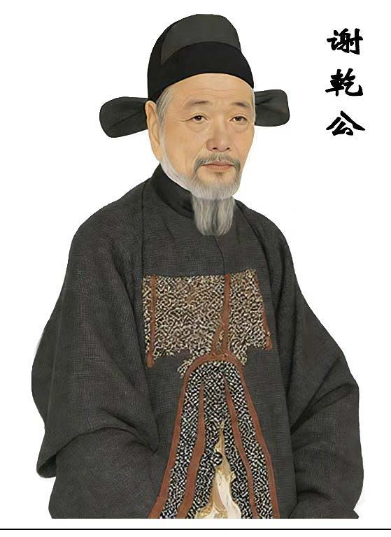
乾公
十八世叔仅公次子，与兄同为省祭酒，冠带荣身，素有孝行（与兄同迁枫槎，派在西房之祖）
以上祖像均按页码顺序载于《枫槎谢氏宗谱》祖像篇（敦睦堂珍藏·公元二〇二六年丙午春重修）
族谱
查阅电子族谱 · 了解家族世系
《下枫槎谢氏宗谱》
族谱是家族的历史典籍。下枫槎谢氏族谱历经续修，自宋绍兴间已有序文，清嘉庆、道光年间递有增补。公元二〇二六年（岁次丙午春）重修，敦睦堂珍藏，分上下两册，详录自炎帝以来世系传承与人物事迹。
进入族谱查询 →* 族谱查询需密码验证，请联系管理员获取权限